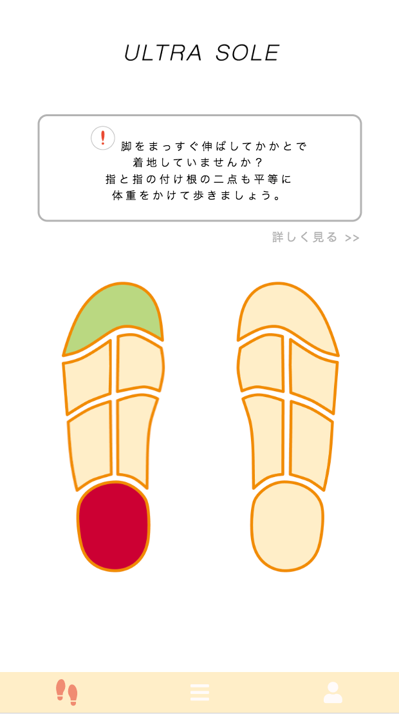
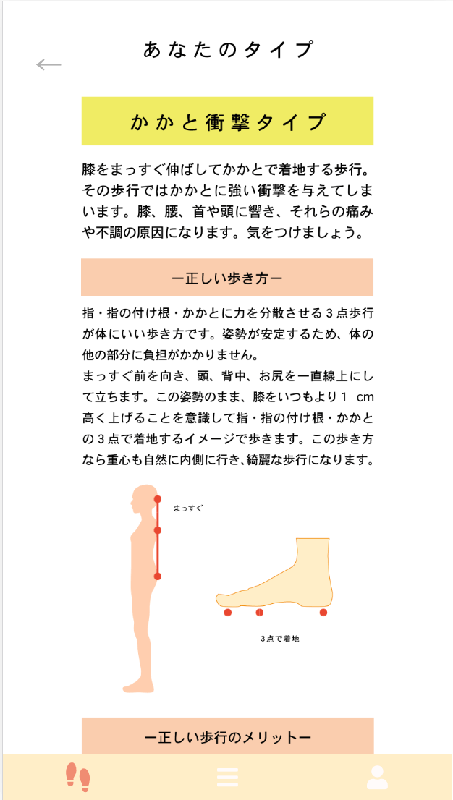
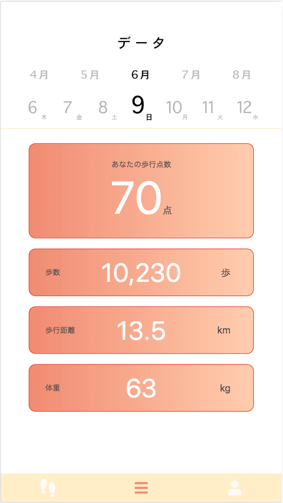
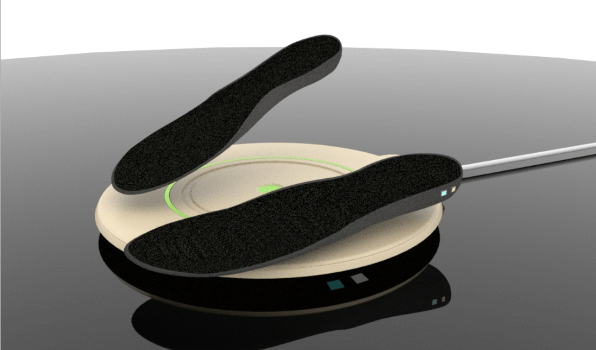
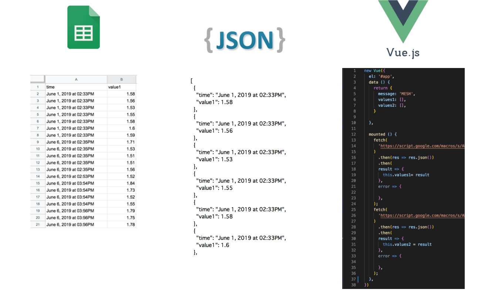
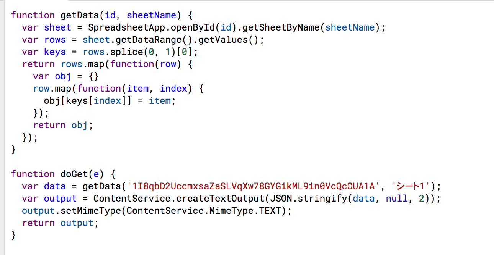

概要
歩行を改善し健康面改善をすることができる究極のインソール、ウルトラソールです。
３年生前期の実習で作成しました。
期間
2019年4月12日〜6月7日 (２ヶ月間)
使用ツール
illustrator
html
css
Vue.js
圧力センサー
MESH
IFTTT
google apps script
作品紹介
  

快適な歩行はもちろんのこと、ウルトラソールに内蔵されている圧力計から歩行時の重心移動を測定し、あなたの歩行を改善できる的確なアドバイスを受信できます。
製品概要としてはまずこのインソール本体。この本体に圧力計、バッテリーが内蔵されており、本体を靴に入れていただき、従来通りインソールとしてご使用いただきます。
アプリケーションは、ウルトラソールを使っていただいた際に計測したデータから歩行を点数化し、具体的なアドバイスを提供できます。
歩行を点数化してくれるので、どれだけ良くない歩き方をしていたのか、どれだけ改善されたのか一目でわかりますし、楽しく歩行を改善していけるのは間違いありません。
また、インソールに材質には、ソフト素材(ポリウレタン・ポリエステル繊維)を使用しており、多くの人の足にフィットする形状をとっているので、足に負荷が少なく快適に歩行することができます。
技術説明
インソールに内蔵された圧力センサーはMESH(ブロック形状のIoTブロック)と結びつけられ、IFTTTでgoogleスプレッドシートに保存されます。
スプレッドシートに保存された値をgoogle apps scriptを使用してjson型にします。
それをVue.jsを用いてアプリケーションに数値を反映させています。
 
デザイン説明
圧力センサーの値が基準より低かったらアプリ内のインソールに緑色で、基準より高かったら赤色で表示することで視覚的にわかりやすく伝えています。
感想
普段やらないプロダクトデザインまでしっかりと考えることで、プレゼンでは実際に使ってもらうことでイメージをしやすくすることができました。
また、MESHやgoogle apps script、Vue.jsなど初めて触るものばかりでしたが短い期間で製作することで、素早く調べる力、トライ&エラーを短いサイクルで回すこと、忍耐力がとても付きました。